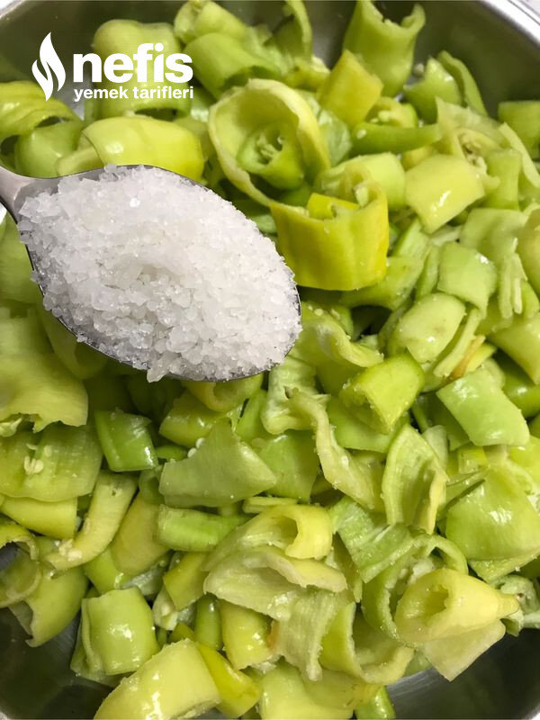

🍽️ 12-14 kişilik⏱️ Hazırlık: 40 dk🔥 Pişirme: 10 dk🏷️ Diğer Tarifler🏷️ Turşu Tarifleri
Malzemeler
- 2 kg sarı biber
- 1 kg lor
- 1 bardak süzme yoğurt (200 mg)
- 200 gram labne peyniri
- 1 bardak (200 mg) süt kaymağı (Sütlerin kaymağını biriktirdim)
- Tuz
- 1-1,5 lt kadar süt
Hazırlanışı
- Biberleri yıkayıp çekirdeklerini çıkarıyoruz.
- Birkaç saat kurumaya bırakıyoruz.
- İstediğimiz büyüklükte kesiyoruz.
- Tuzlayıp bekletiyoruz. (5-6 saat kadar)biberler su salacaktır.
- Loru, yoğurdu, labne peynirini ( varsa 1 bardak kadar beyaz peynir de ilave edebilrsiniz) iyice karıştırıyoruz gerekirse tuz da ilave ediyoruz.
- İki bardak kadar süt ile kıvamı inceltiyoruz.
- Kavanozun dibine 2-3 kaşık kadar süt koyuyoruz.
- Üzerine bir sıra biber diziyoruz.
- Biberlerin üzerine 2-3 kaşık lorlu harcı koyuyoruz.
- Kavanoz dolasıya kadar bir sıra biber, bir sıra lorlu harç olarak kavanozu 2 parmak kadar kalasaya kadar dolduruyoruz.
- Bu malzemelerle 4 adet 1 lt lik, 1 adet yarım lt lik kavanoz doldurdum.
- Sütü yoğurt mayalama kıvamında ısıtıyoruz.
- Kavanozlara boşlukları dolduracak şekilde ilave ediyoruz ( kavanozun kenarlarını bıçak yardımıyla aralayıp sütü koyabiliriz).
- Kavanozların üzerinde taşmalara karşı 2 parmak kadar boş bırakmalıyız.
- Kenarlarını peçeteyle silip kapağını kapatıyoruz.
- Taşmalara karşı poşete geçirip buzdolabına kaldırıyoruz.
- 15-20 gün sonra nefis sütlü turşumuz hazır. İstediğimiz öğünde sütlü turşumuzu tüketiyoruz. Afiyet olsun 😊.